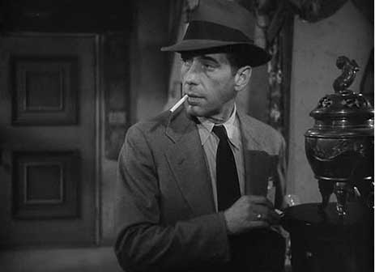
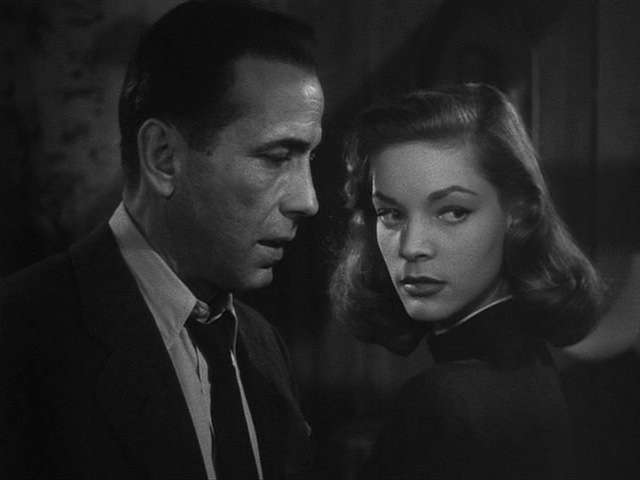
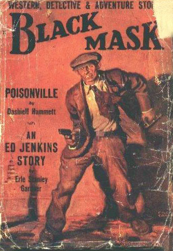
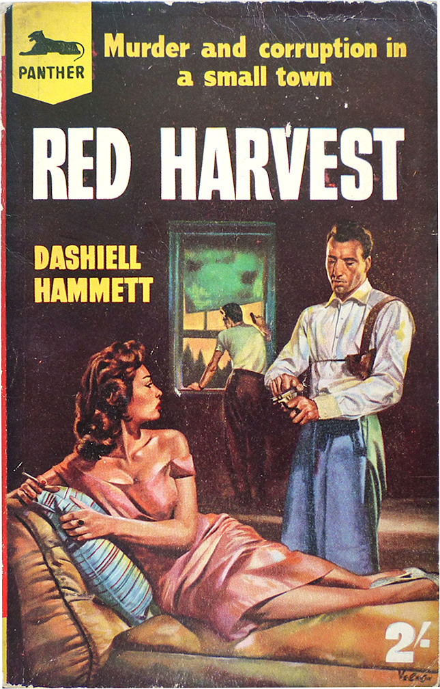
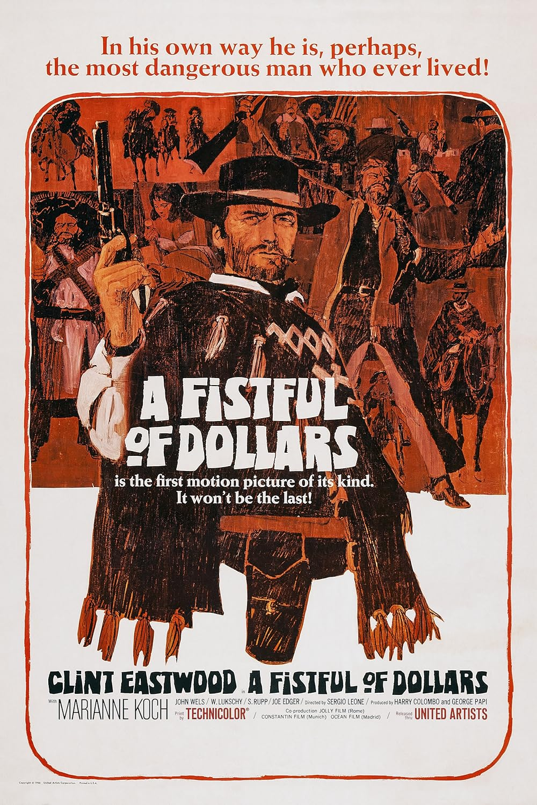
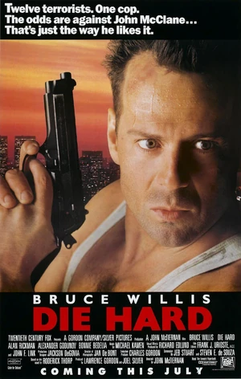

| Private detective | Private Eye |
|---|---|
| Rural or urban setting | Urban setting |
| Closed society, with limited number of suspects, who are introduced at the beginning of the narrative | Open society, with indefinite number of suspects, who are introduced throughout the narrative |
| Detective usually hired to solve a crime | Detective is usually hired to investigate a situation |
| Private detective | Private Eye |
|---|---|
| Detective often has an assistant with whom he has a Holmes-Watson relationship | Detective may have colleagues or a devoted secretary |
| Detective basically static: remains in one place to interview suspects | Detective basically mobile; moves from place to place to interview characters |
| Detective and police co-operate | Detective and police usually antagonists |
| Police usually honest | Police often corrupt |
| Private detective | Private Eye |
|---|---|
| Little violent action, and confined to the conclusion if it occurs | Much violent action throughout narrative |
| Organized crime rare | Organized crime common |
| No sex; love interest only between minor characters | Sex; love interest between detective and client or detective and secretary |
| Private detective | Private Eye |
|---|---|
| Intake of alcohol normal | Intake of alcohol excessive |
| Third-person narration or first-person narration by Watson-type figure | Usually first-person narration by detective |
Dashiell Hammett:
- 1894–1961
- Joined the Pinkertons at 21
- Started writing stories about the "Continental Op," published in the early 20s in Black Mask
- The Maltese Falcon (1929), The Thin Man






